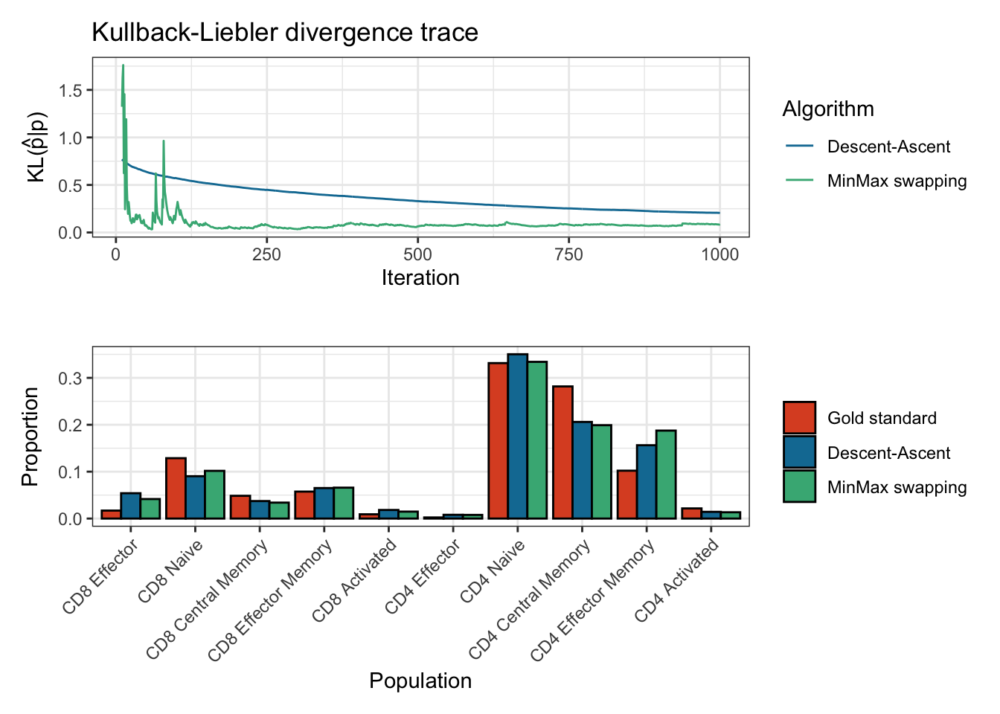
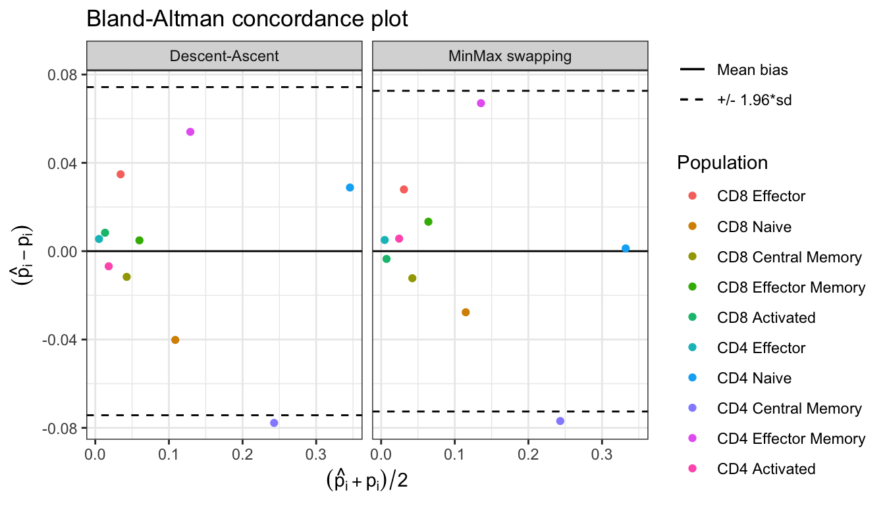

CytOpT uses regularized optimal transport to directly estimate the different cell population proportions from a biological sample characterized with flow cytometry measurements.
Overview
CytOpT is an R package that provides a new algorithm relying regularized optimal transport to directly estimate the different cell population proportions from a biological sample characterized with flow cytometry measurements. Algorithm is based on the regularized Wasserstein metric to compare cytometry measurements from different samples, thus accounting for possible mis-alignment of a given cell population across sample (due to technical variability from the technology of measurements).
The main function of the package is CytOpT().
The methods implemented in this package are detailed in the following article:
Paul Freulon, Jérémie Bigot, Boris P. Hejblum. CytOpT: Optimal Transport with Domain Adaptation for Interpreting Flow Cytometry data. Annals of Applied Statistics, 17(2), 1086-1104. doi:10.1214/22-AOAS1660 https://doi.org/10.1214/22-AOAS1660 https://arxiv.org/abs/2006.09003
Installation
You can install and load CytOpT into R from CRAN with the following commands:
install.packages("CytOpT")
library(CytOpT)Alternatively, you can install the development version of CytOpT like so:
Example
This is a basic example of CytOpt usage:
Proportion estimations using optimal transport and minmax swapping procedures
# Run CytOpt and compare the two optimization methods
res <- CytOpT(X_s = HIPC_Stanford_1228_1A, X_t = HIPC_Stanford_1369_1A,
Lab_source = HIPC_Stanford_1228_1A_labels,
theta_true = gold_standard_manual_prop,
eps = 0.0001, lbd = 0.0001, n_iter = 10000, n_stoc=10,
step_grad = 10, step = 5, power = 0.99,
method='both', monitoring=TRUE)
#> Converting `X_s` from data.frame to matrix type
#> Converting `X_t` from data.frame to matrix type
#> Running Descent-ascent optimization...
#> Done in 41 secs
#> Running MinMax optimization...
#> Done in 13.1 secs
summary(res)
#> Estimation of cell proportions with Descent-Ascent and MinMax swapping from CytOpt:
#> Gold_standard Descent_ascent MinMax
#> CD8 Effector 0.017004001 0.053759778 0.047393221
#> CD8 Naive 0.128736173 0.088769005 0.107816158
#> CD8 Central Memory 0.048481996 0.038397834 0.033566658
#> CD8 Effector Memory 0.057484114 0.063361303 0.065816317
#> CD8 Activated 0.009090374 0.018372778 0.009994826
#> CD4 Effector 0.002324076 0.008558555 0.004906936
#> CD4 Naive 0.331460344 0.342921952 0.342097994
#> CD4 Central Memory 0.281713344 0.214043702 0.194972841
#> CD4 Effector Memory 0.102082843 0.157122353 0.185355840
#> CD4 Activated 0.021622735 0.014692740 0.008079209
#>
#> Final Kullback-Leibler divergences:
#> Descent-Ascent MinMax swapping
#> 0.06512061 0.07230307
#> Number of iterations:
#> Descent-Ascent MinMax swapping
#> 5000 10000
plot(res)
#> Plotting KL divergence for iterations 10 to 1000 while there were at least 5000 iterations performed for each method.
Bland_Altman(res$proportions)